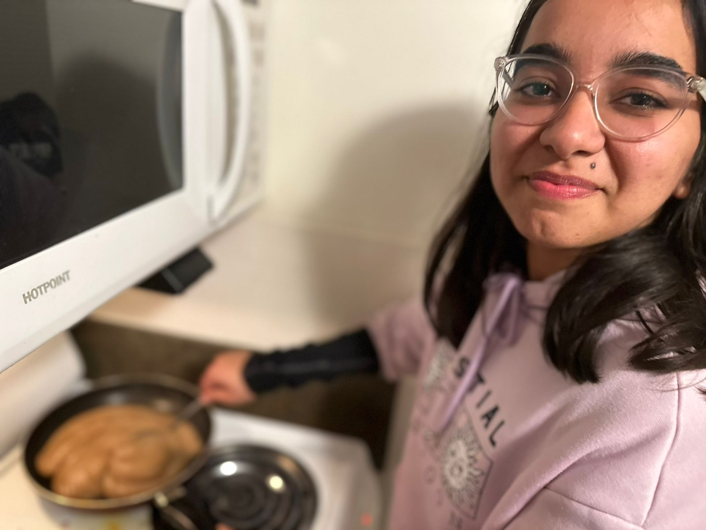

Hi, I'm Ananya 👋
I'm a college student who got tired of the same cycle: open the fridge, see random ingredients, close the fridge, open DoorDash, spend $15 I don't have. Sound familiar?
I built Fridge to Fork as a class project that turned into something real. I wanted an app that actually understood the student experience — limited money, limited time, limited cooking skills, and a fridge full of "stuff."
The AI doesn't just suggest recipes. It explains why each step matters, gives you exact quantities, warns you what can go wrong, and compares home-cooking costs to ordering out. It's designed for complete beginners.
Every feature was tested by real students in real dorm kitchens.
We give real nutrition info, real prices, and honest cooking times.
Because students shouldn't have to pay for an app that saves them money.